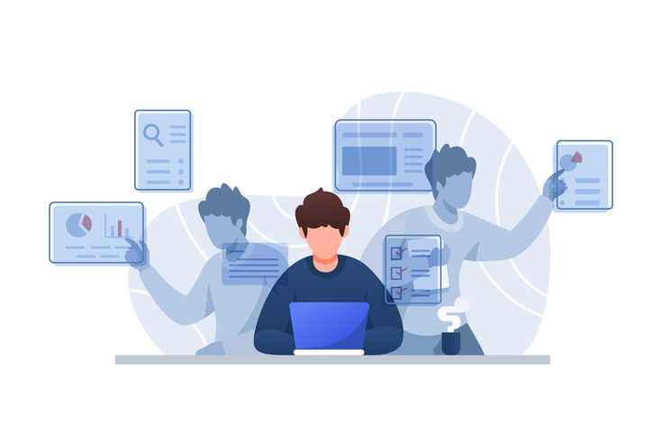
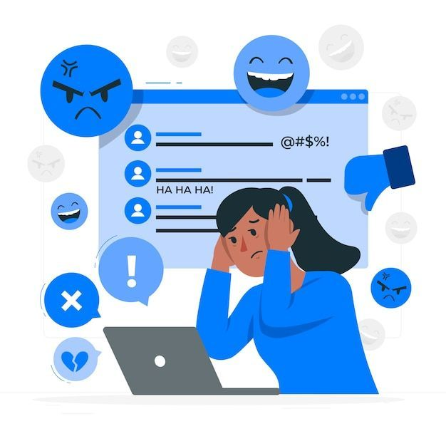
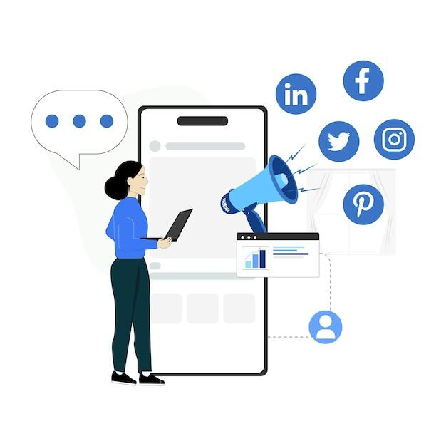

Dijital farkındalıkla dengeli bir yaşam...

Masum bir eğlence ne zaman kontrol edilemeyen bir alışkanlığa dönüşüyor? Gerçek hikayelerle öğrenin.

"Acaba ben bağımlı mıyım" diye mi düşünüyorsunuz? En yaygın 4 özelliği keşfedin.

Ekran sürenizi sağlıklı seviyelere indirmek için pratik adımlar ve kanıtlanmış yöntemler.
Projemiz için hazırladığımız görsel çalışmaya aşağıdan ulaşabilirsiniz: